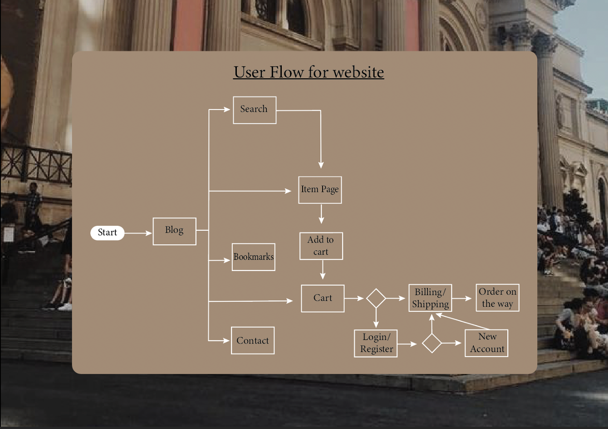

From the lecture we learnt how to create flex boxes, rows as well as columns. The most important part of learning about flex boxes is how to shrink and grow flex boxes as well as changing the positioning of boxes using flex start etc.
This is interesting to learn because this would be good to use in a e-commerce site, especially on a product page where products are displayed in grids. Using flex boxes for a product page will ensure that the page will be responsive and it will give the user a better experience.
I think that this will influence me as a web designer because it makes me think more carefully about placement of flexboxes and I have to take into consideration about how it looks when the desktop is full screen verus when it is reduced. Flex boxes are fully customizable so there are many styles that I can create, I have to be careful when it comes to how I use flex boxes and how they would suit the site I am creating
Class and Project Work

In class we looked at user flows and how they can be transformed into wireflows as well, one of the most interesting things I learnt was that there are specific keys when creating a user flow (start, process, decision), not only does this help me create a proper user flow but also I can get a more clearer understanding of other people's user flows.
From what I learnt in class this week I applied it to my own project, it really made me think about what is it I am trying to solve and how that could be achieved in the most clear and concise way. The more I thought about exactly what the user needs the more I found that more pages were required to satisfy the requirements. The user flow is helpful to visualise the journey that the user will be taking on the site, it made me consider what would they want to see first and what pages would they go back and forth on.